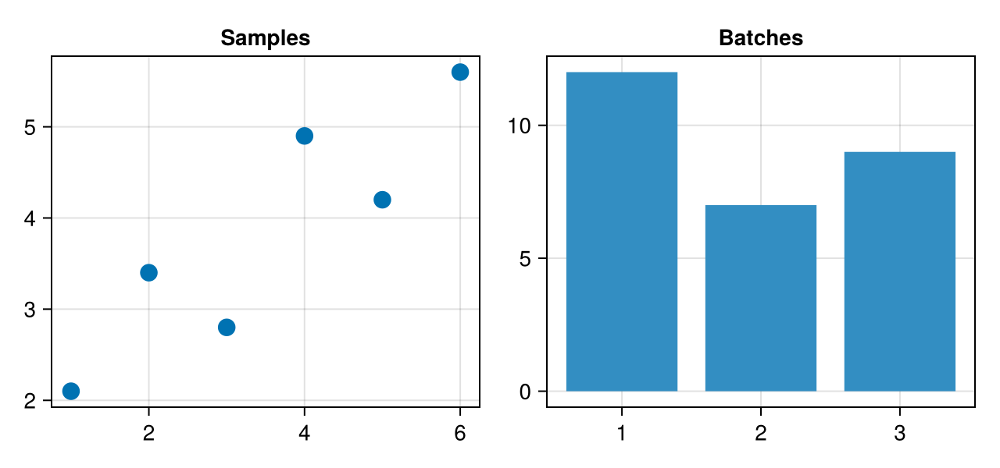

Build a widget
A figure with a few named plots and controls, passed to one masque call, becomes a small tool: the reader clicks, selects and chooses, and other cells get one value that holds all of it. By the end of this section you can build one that labels points into classes:
Its code is on Label points into classes, the last page of this section, once the pages before it have shown each part.
Name each part
Name each plot and each control in one named tuple, and the names become the fields of the value. The example below has two plots:
Notebook as text
Click a point, then a bar: each click fills its own field of w, and the other field keeps its pick.
begin
xs = [1.0, 2.0, 3.0, 4.0, 5.0, 6.0]
ys = [2.1, 3.4, 2.8, 4.9, 4.2, 5.6]
fig = Figure(size = (640, 300))
ax1 = Axis(fig[1, 1]; title = "Samples")
sc = scatter!(ax1, xs, ys; markersize = 16)
ax2 = Axis(fig[1, 2]; title = "Batches", xticks = 1:3)
bp = barplot!(ax2, [1, 2, 3], [12, 7, 9])
nothing
end@bind w masque(fig, (sample = interactables(sc), batch = interactables(bp)))
begin
sample = isnothing(w.sample) ? "nothing" : "point $(w.sample.index)"
batch = isnothing(w.batch) ? "nothing" : "bar $(w.batch.index)"
"w.sample is $sample, w.batch is $batch"
endw.sample is nothing, w.batch is nothingWhat the @bind value holds lists what each kind of field holds, and Choose the fields with bind shows how to keep a field out of the value.
Add each click to the selection
A widget that builds something up, such as a set of labeled points, needs every click to add to what the reader has already selected rather than replace it. Pass the plot with select = :many, as Select several marks describes:
@bind w masque(fig, (pts = interactables(sc; select = :many),))Put the controls in the figure
A widget often needs a setting next to the plot, such as which class a click assigns or how strongly to smooth a curve. If the masque cell reads a slider or menu from another cell, changing it runs the masque cell again, and the reader loses the selection. To keep it, lay out Makie's own Menu, Slider or Toggle in the figure and name it in the same named tuple:
class = Menu(fig[2, 1]; options = ["good", "bad", "unsure"])
@bind w masque(fig, (class = class, pts = interactables(sc; select = :many)))w.class is then the option chosen, and changing it leaves the selection as it was. Sliders, toggles and menus lists the controls you can use.
Where to go next
Update the figure changes the plots each time the reader clicks or moves a control, without running the cell again. After it, Sliders, toggles and menus lists the controls, and Label points into classes builds the widget in the clip above.